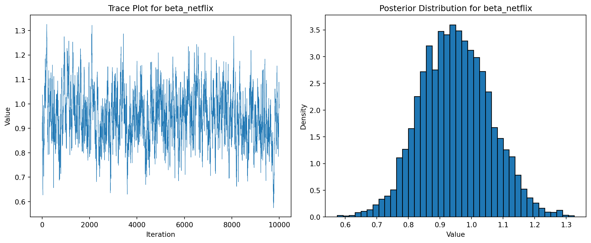

1. Likelihood for the Multi-nomial Logit (MNL) Model
Suppose we have \(i=1,\ldots,n\) consumers who each select exactly one product \(j\) from a set of \(J\) products. The outcome variable is the identity of the product chosen \(y_i \in \{1, \ldots, J\}\) or equivalently a vector of \(J-1\) zeros and \(1\) one, where the \(1\) indicates the selected product. For example, if the third product was chosen out of 3 products, then either \(y=3\) or \(y=(0,0,1)\) depending on how we want to represent it. Suppose also that we have a vector of data on each product \(x_j\) (eg, brand, price, etc.).
We model the consumer’s decision as the selection of the product that provides the most utility, and we’ll specify the utility function as a linear function of the product characteristics:
\[ U_{ij} = x_j'\beta + \epsilon_{ij} \]
where \(\epsilon_{ij}\) is an i.i.d. extreme value error term.
The choice of the i.i.d. extreme value error term leads to a closed-form expression for the probability that consumer \(i\) chooses product \(j\):
A clever way to write the individual likelihood function for consumer \(i\) is the product of the \(J\) probabilities, each raised to the power of an indicator variable (\(\delta_{ij}\)) that indicates the chosen product:
We will simulate data from a conjoint experiment about video content streaming services. We elect to simulate 100 respondents, each completing 10 choice tasks, where they choose from three alternatives per task. For simplicity, there is not a “no choice” option; each simulated respondent must select one of the 3 alternatives.
Each alternative is a hypothetical streaming offer consistent of three attributes: (1) brand is either Netflix, Amazon Prime, or Hulu; (2) ads can either be part of the experience, or it can be ad-free, and (3) price per month ranges from $4 to $32 in increments of $4.
The part-worths (ie, preference weights or beta parameters) for the attribute levels will be 1.0 for Netflix, 0.5 for Amazon Prime (with 0 for Hulu as the reference brand); -0.8 for included adverstisements (0 for ad-free); and -0.1*price so that utility to consumer \(i\) for hypothethical streaming service \(j\) is
where the variables are binary indicators and \(\varepsilon\) is Type 1 Extreme Value (ie, Gumble) distributed.
3. Preparing the Data for Estimation
The “hard part” of the MNL likelihood function is organizing the data, as we need to keep track of 3 dimensions (consumer \(i\), covariate \(k\), and product \(j\)) instead of the typical 2 dimensions for cross-sectional regression models (consumer \(i\) and covariate \(k\)). The fact that each task for each respondent has the same number of alternatives (3) helps. In addition, we need to convert the categorical variables for brand and ads into binary variables.
_Code up the log-likelihood function, to find the MLEs for the 4 parameters (\(\beta_\text{netflix}\), \(\beta_\text{prime}\), \(\beta_\text{ads}\), \(\beta_\text{price}\)), as well as their standard errors (from the Hessian). For each parameter construct a 95% confidence interval.__
import numpy as npfrom scipy.optimize import minimizefrom scipy.special import logsumexp# Extract X matrix and y vectorX = df_prep[['brand_N','brand_P','ad_Yes','price']].valuesy = df_prep['choice'].values# Define number of tasks per respondent and alternatives per taskn_alts =3# Define the negative log-likelihood function for the MNL modeldef neg_log_likelihood(beta, X, y, n_alts): beta = np.array(beta) utilities = X @ beta utilities = utilities.reshape(-1, n_alts) log_probs = utilities - logsumexp(utilities, axis=1, keepdims=True) log_likelihood = np.sum(y.reshape(-1, n_alts) * log_probs)return-log_likelihood# Initial guess for betabeta_init = np.zeros(X.shape[1])# Minimize the negative log-likelihoodresult = minimize(neg_log_likelihood, beta_init, args=(X, y, n_alts), method='BFGS')# Extract estimates and compute standard errors from the Hessianbeta_mle = result.xhessian_inv = result.hess_invse = np.sqrt(np.diag(hessian_inv))z =1.96# for 95% CI# Confidence intervalsci_lower = beta_mle - z * seci_upper = beta_mle + z * se# Compile results into a dataframemle_results = pd.DataFrame({"Parameter": ["beta_netflix", "beta_prime", "beta_ads", "beta_price"],"Estimate": beta_mle,"Std. Error": se,"95% CI Lower": ci_lower,"95% CI Upper": ci_upper})mle_results.round(3)
Parameter
Estimate
Std. Error
95% CI Lower
95% CI Upper
0
beta_netflix
0.941
0.114
0.717
1.165
1
beta_prime
0.502
0.121
0.265
0.738
2
beta_ads
-0.732
0.089
-0.906
-0.558
3
beta_price
-0.099
0.006
-0.112
-0.087
5. Estimation via Bayesian Methods
code up a metropolis-hasting MCMC sampler of the posterior distribution. Take 11,000 steps and throw away the first 1,000, retaining the subsequent 10,000.
import numpy.random as npr# Define log prior functiondef log_prior(beta):# Normal priors: N(0,5) for first 3 betas, N(0,1) for price logp =-0.5* (beta[0]**2+ beta[1]**2+ beta[2]**2) /25# variance = 5^2 = 25 logp +=-0.5* (beta[3]**2) # variance = 1return logp# Log posterior functiondef log_posterior(beta, X, y, n_alts):return-neg_log_likelihood(beta, X, y, n_alts) + log_prior(beta)# Metropolis-Hastings MCMC samplerdef metropolis_hastings(log_post, initial_beta, X, y, n_alts, n_iter=11000, proposal_sd=[0.05, 0.05, 0.05, 0.005]): n_params =len(initial_beta) samples = np.zeros((n_iter, n_params)) beta_current = initial_beta log_post_current = log_post(beta_current, X, y, n_alts)for t inrange(n_iter):# Propose new beta from normal distributions beta_proposal = beta_current + npr.normal(0, proposal_sd) log_post_proposal = log_post(beta_proposal, X, y, n_alts)# Acceptance probability accept_ratio = np.exp(log_post_proposal - log_post_current)if np.random.rand() < accept_ratio: beta_current = beta_proposal log_post_current = log_post_proposal samples[t] = beta_currentreturn samples# Run the MCMC samplerinitial_beta = np.zeros(4)samples = metropolis_hastings(log_posterior, initial_beta, X, y, n_alts)# Discard the first 1,000 samples (burn-in)posterior_samples = samples[1000:]# Summarize posterior samplesposterior_summary = pd.DataFrame({"Parameter": ["beta_netflix", "beta_prime", "beta_ads", "beta_price"],"Mean": posterior_samples.mean(axis=0),"Std. Dev.": posterior_samples.std(axis=0),"2.5%": np.percentile(posterior_samples, 2.5, axis=0),"97.5%": np.percentile(posterior_samples, 97.5, axis=0)})posterior_summary.round(3)
Parameter
Mean
Std. Dev.
2.5%
97.5%
0
beta_netflix
0.949
0.110
0.741
1.169
1
beta_prime
0.506
0.107
0.305
0.716
2
beta_ads
-0.735
0.092
-0.913
-0.558
3
beta_price
-0.100
0.007
-0.113
-0.087
for one of the 4 parameters, I will show the trace plot of the algorithm, as well as the histogram of the posterior distribution.
import matplotlib.pyplot as plt# Choose one parameter to visualize: beta_netflix (index 0)trace_samples = posterior_samples[:, 0]# Plot trace and histogramplt.figure(figsize=(12, 5))# Trace plotplt.subplot(1, 2, 1)plt.plot(trace_samples, lw=0.5)plt.title("Trace Plot for beta_netflix")plt.xlabel("Iteration")plt.ylabel("Value")# Histogramplt.subplot(1, 2, 2)plt.hist(trace_samples, bins=40, density=True, edgecolor='k')plt.title("Posterior Distribution for beta_netflix")plt.xlabel("Value")plt.ylabel("Density")plt.tight_layout()plt.show()

Next I will report the 4 posterior means, standard deviations, and 95% credible intervals and compare them to the results from the Maximum Likelihood approach.
comparison = mle_results.copy()comparison.columns = ["Parameter", "MLE Estimate", "MLE Std. Error", "MLE 95% CI Lower", "MLE 95% CI Upper"]comparison["Bayes Mean"] = posterior_summary["Mean"]comparison["Bayes Std. Dev."] = posterior_summary["Std. Dev."]comparison["Bayes 95% CI Lower"] = posterior_summary["2.5%"]comparison["Bayes 95% CI Upper"] = posterior_summary["97.5%"]comparison.round(3)
Parameter
MLE Estimate
MLE Std. Error
MLE 95% CI Lower
MLE 95% CI Upper
Bayes Mean
Bayes Std. Dev.
Bayes 95% CI Lower
Bayes 95% CI Upper
0
beta_netflix
0.941
0.114
0.717
1.165
0.949
0.110
0.741
1.169
1
beta_prime
0.502
0.121
0.265
0.738
0.506
0.107
0.305
0.716
2
beta_ads
-0.732
0.089
-0.906
-0.558
-0.735
0.092
-0.913
-0.558
3
beta_price
-0.099
0.006
-0.112
-0.087
-0.100
0.007
-0.113
-0.087
6. Discussion
The comparison of Maximum Likelihood Estimation (MLE) and Bayesian posterior summaries reveals close alignment in the estimated parameters, indicating robustness of the model across estimation methods. With this in mind, we interpret the parameter estimates as if they had been obtained from real (non-simulated) data and discuss the potential implications for modeling preference heterogeneity.
Interpretation of Parameter Estimates
If these parameter estimates were derived from actual consumer data, they would yield valuable insights into preferences over key streaming service attributes, including brand, advertising, and price.
Relative Brand Preferences
The estimate for \(\beta_{\text{Netflix}}\) is larger than that for \(\beta_{\text{Prime}}\), both of which are positive relative to the reference category, Hulu. This suggests that, all else equal, consumers derive the highest utility from Netflix, followed by Amazon Prime, and then Hulu. In practical terms, this implies a clear brand preference hierarchy that aligns with Netflix’s market leadership and perceived content quality.
Effect of Advertisements
The negative coefficient on the ads variable indicates that advertisement inclusion reduces the utility of a streaming service. This result is consistent with consumer expectations and supports the idea that ad-free plans are generally preferred. For ad-supported models to be attractive, they may need to offer lower pricing or other incentives.
Price Sensitivity
The negative sign of the \(\beta_{\text{price}}\) coefficient aligns with standard economic theory: higher prices reduce the probability that a product will be chosen. The estimated magnitude suggests that each additional dollar in monthly subscription cost reduces utility by approximately 0.1 units, providing a quantifiable measure of consumers’ price sensitivity.
Summary
Overall, the parameter estimates are intuitive and align with expectations. They reflect strong brand preferences, disutility from advertisements, and rational sensitivity to pricing—factors critical for effective product design and positioning in the streaming services market.
Toward More Realistic Preference Modeling
While the fixed-parameter MNL model offers valuable insights, it assumes that all consumers share the same preferences. In real-world applications, this assumption is overly restrictive. To account for heterogeneity in preferences, a more flexible model is required.
Extension to a Hierarchical (Random-Parameter) Model
A more realistic framework for analyzing conjoint data is the hierarchical multinomial logit model (also known as the mixed logit model). This model relaxes the assumption of homogeneous preferences by allowing each individual to have their own set of preference parameters.
1. Simulating Data
To simulate data under a hierarchical structure:
Define a distribution over individual-level parameters, such as \(\beta_i \sim \mathcal{N}(\mu, \Sigma)\), instead of assuming fixed effects.
For each individual \(i\), draw a personalized vector of preferences \(\beta_i\) from this distribution.
Use these respondent-specific parameters to simulate choices, capturing variation in how different individuals value features like brand, ads, and price.
This process generates richer data that reflects the natural diversity in consumer preferences.
2. Estimation Adjustments
To estimate the parameters of a hierarchical MNL model, we must integrate over the distribution of individual-level betas, which introduces computational complexity:
The resulting likelihood function contains an integral over the unobserved heterogeneity, which typically lacks a closed-form solution.
Two common approaches to estimation are:
Hierarchical Bayesian estimation, which uses MCMC to jointly estimate the individual-level parameters and population-level hyperparameters (\(\mu\), \(\Sigma\)).
Maximum Simulated Likelihood (MSL), which approximates the integral by averaging over simulated draws from the assumed distribution of \(\beta_i\).
These methods allow us to recover both:
The population distribution of preferences, which informs aggregate-level strategies,
And individual-level estimates, which can guide personalization and segmentation.
Summary
Incorporating a hierarchical structure into the MNL model significantly enhances its realism and interpretability. By explicitly modeling variation across individuals, the hierarchical approach supports more accurate inference and decision-making. This extension is essential for analyzing real-world conjoint data, where preference heterogeneity is the norm rather than the exception.